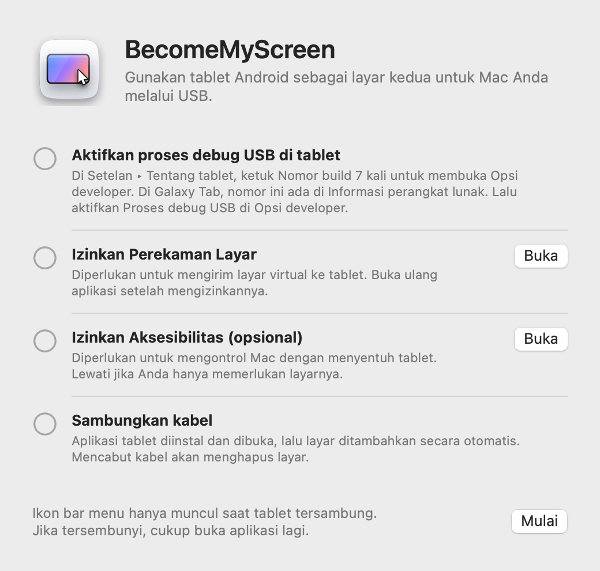
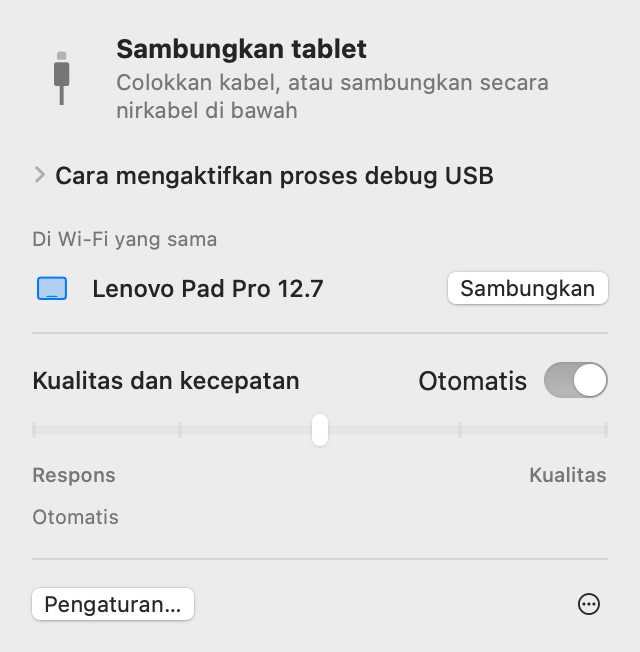
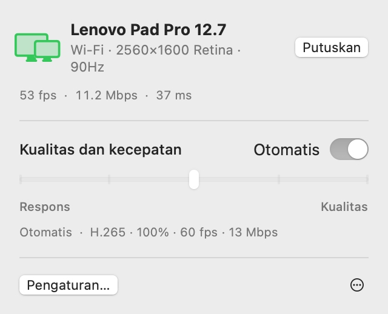
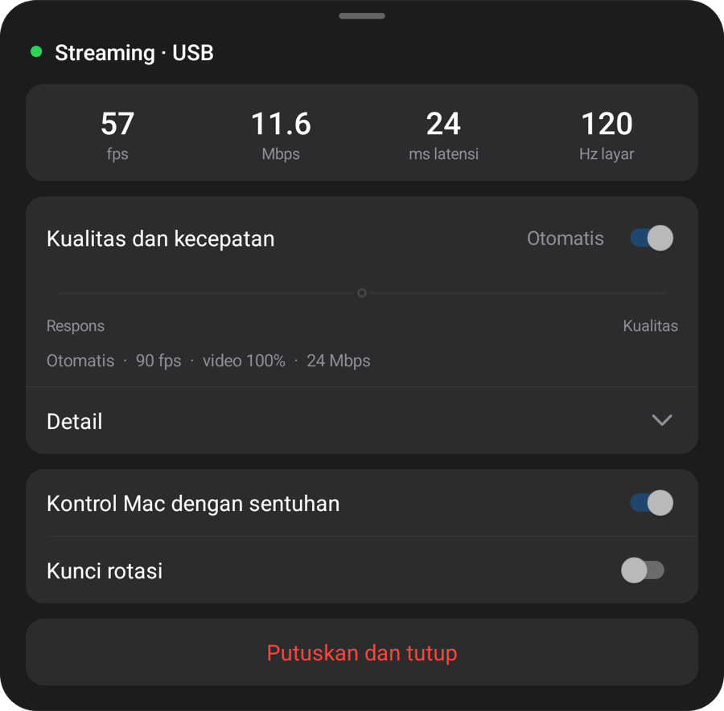
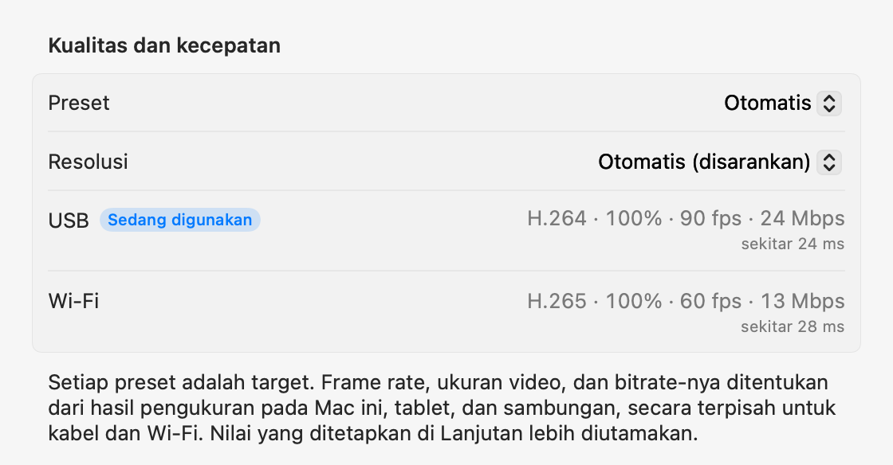

macOS + Pratinjau Windows
Tablet Anda.
Layar komputer Anda.
Layar tambahan untuk Mac. Pratinjau pencerminan layar untuk Windows. Hubungkan tablet Android lewat USB; komputer akan memasang dan membuka aplikasi tablet.
Buka file zip, pindahkan aplikasi ke folder Aplikasi, lalu buka. Untuk sambungan pertama, lihat Penyiapan.
Buka halaman ini di komputer untuk mengunduh aplikasi Mac atau Windows.

1.0.0 Preview 1
Pratinjau Windows
Kini di Windows 11. Aplikasi native Intel/AMD x64 dan ARM64 dalam satu unduhan.

Ekstrak seluruh ZIP lalu jalankan Start-Mirroring.cmd. Pada mesin virtual, gunakan Start-Mirroring-VM.cmd. Aktifkan debugging USB di tablet dan izinkan koneksi. Mesin video diunduh otomatis saat pertama dibuka; Internet diperlukan.
Pengaturan, fitur, dan pengukuran di bawah berlaku untuk versi Mac. Untuk Windows, ikuti panduan pratinjau di atas.
Penyiapan
Anda hanya perlu menyiapkannya sekali. Setelah itu, mencolokkan kabel akan menambahkan layar, dan di Wi‑Fi yang sama tablet tersambung tanpa kabel.
-
Instal aplikasi Mac
Buka file zip yang diunduh, pindahkan BecomeMyScreen ke folder Aplikasi, lalu buka. Izinkan Perekaman Layar, lalu buka aplikasi sekali lagi.
-
Aktifkan proses debug USB di tablet
Di Setelan › Tentang tablet, ketuk Nomor build tujuh kali untuk membuka Opsi developer. Di Galaxy Tab, nomor ini ada di Informasi perangkat lunak. Lalu aktifkan Proses debug USB di Opsi developer.
-
Sambungkan kabel
Saat tablet menanyakan apakah proses debug USB diizinkan, centang “Selalu izinkan dari komputer ini” dan ketuk “Izinkan”. Mac menginstal dan membuka aplikasi tablet, lalu menambahkan layar. Tidak ada aplikasi tablet terpisah yang perlu diunduh.

Kecepatan
Waktu sejak Mac merekam layar hingga tablet menampilkannya. Diukur dengan Lenovo Pad Pro 12.7 dan Mac dengan M4 Pro.
| Ukuran video | 60 fps | 120 fps |
|---|---|---|
| 100%2560×1600 | 20 ms | 24 ms |
| 75%1920×1200 | 14 ms | 19 ms |
| 50%1280×800 | 11 ms | 16 ms |
Encoder perangkat keras di Apple silicon mengompresi layar ke H.264 dan mengirimkannya melalui USB, lalu dekoder perangkat keras tablet menampilkan setiap frame begitu tiba. Pada sambungan pertama, mode Otomatis mengukur seberapa banyak yang dapat ditangani dekoder dan memilih frame rate tertinggi yang tidak tertinggal. Di tablet ini, yang dipilih adalah 90 fps.
Cara pengukuran: setelah mengoreksi selisih jam kedua perangkat, kami mengukur waktu antara Mac merekam sebuah frame dan tablet menampilkan frame tersebut.
Nirkabel
Tablet yang pernah tersambung melalui USB juga dapat digunakan secara nirkabel di Wi‑Fi yang sama. Cabut kabel saat Anda bekerja, dan layar tetap berlanjut melalui Wi‑Fi.
- Menyambungkan
- Buka aplikasi di tablet, dan tablet muncul di daftar “Di Wi‑Fi yang sama” pada bar menu Mac. Klik “Sambungkan”, dan layar pun tampil.
- Mencabut kabel
- Sambungan beralih ke Wi‑Fi dalam satu detik. Layar virtual dan tata letak jendela Anda tetap seperti semula, dan mencolokkan kembali kabel akan kembali ke USB.
- Keamanan
- Kunci untuk sambungan nirkabel hanya dipertukarkan melalui kabel USB. Sambungan hanya dibuat setelah kunci terverifikasi, dan layar serta input seluruhnya dienkripsi dengan AES-256-GCM.
- Pengaturan tempo adaptif
- Tablet mengonfirmasi setiap frame yang diterima, dan Mac melewati frame sebanyak ketertinggalannya serta menyesuaikan bitrate. Bahkan saat Wi‑Fi melambat sesaat, penundaan tidak menumpuk.


| Sambungan | Latensi | Catatan |
|---|---|---|
| USB | Sekitar 20–25 ms | Frame rate maksimum tablet |
| Wi‑Fi 5 GHz | 40–55 ms | 60 fps; bitrate naik otomatis hingga batas pengaturan kualitas |
| Wi‑Fi 2.4 GHz | 40–65 ms | Latensi terkadang melonjak di atas 100 ms, yang dapat terlihat seperti tersendat |
Diukur dengan Lenovo Pad Pro 12.7 pada 2560×1600 dengan konten yang terus berubah. Jika tablet menggunakan Wi‑Fi 2,4 GHz, aplikasi menyarankan untuk beralih ke 5 GHz.
Kualitas dan respons
Pilih salah satu dari lima tingkat atau biarkan di Otomatis. Ubah dari bar menu Mac atau dari menu tablet, dan kedua sisi berubah bersamaan.
| Preset | Frame rate | Ukuran video | Bitrate |
|---|---|---|---|
| Otomatis | 90 fps | 100% | 24 Mbps |
| 1Respons tercepat | 120 fps | 50% | 8 Mbps |
| 2Respons cepat | 120 fps | 75% | 14 Mbps |
| 3Seimbang | 90 fps | 100% | 24 Mbps |
| 4Kualitas tinggi | 90 fps | 100% | 33 Mbps |
| 5Kualitas terbaik | 60 fps | 100% | 39 Mbps |
Diukur dengan Lenovo Pad Pro 12.7 (2560×1600, 120 Hz) yang tersambung melalui USB ke Mac dengan M4 Pro. Setiap preset adalah target: di Mac atau tablet lain, dan melalui Wi‑Fi, preset menentukan nilainya sendiri dari hasil pengukuran. Preset Otomatis sama dengan Seimbang.
Ukuran video diatur terpisah dari resolusi yang dilihat Mac. Video yang lebih kecil tetap memenuhi layar tablet, serta meringankan beban dekoder dan mengurangi latensi sebanding dengan itu.
Pada sambungan pertama, aplikasi mengukur kabel, encoder video Mac ini, dan dekoder tablet dalam setiap modenya, dalam waktu sekitar 10 detik; saat pertama kali tersambung melalui Wi‑Fi, aplikasi mengukur jaringan. Setiap preset disesuaikan dengan angka-angka ini, secara terpisah untuk kabel dan Wi‑Fi, dan di pengaturan Lanjutan, Anda dapat menetapkan nilai apa pun untuk setiap sambungan. Jika kabel lambat, Anda akan diminta untuk menggantinya.


Sentuhan
Sentuh tablet, dan Mac menerimanya sebagai input mouse. Fitur ini aktif setelah Anda mengizinkan Aksesibilitas di Mac.
| Di tablet | Di Mac |
|---|---|
| Ketuk | Klik |
| Seret | Seret |
| Seret dengan dua jari | Gulir |
| Ketuk dengan dua jari | Klik kanan |
| Ketuk dengan tiga jari | Membuka menu tablet |
| Menggambar dengan pena | Diterima di Mac sebagai input tablet grafis, lengkap dengan tekanan dan kemiringan |
| Arahkan pena atau mouse di atas layar | Menggerakkan penunjuk. Sentuh sambil menahan tombol pena untuk klik kanan |
Penunjuk yang kembali ke tempat semula
Saat Anda menyentuh tablet, penunjuk Mac berpindah ke titik tersebut. Gerakkan mouse sedikit setelahnya, dan penunjuk kembali ke posisinya sebelum sentuhan, sehingga Anda tidak perlu menyeretnya kembali ke pekerjaan di layar utama. Anda dapat mematikannya di Pengaturan.
Detail
- Ikon bar menu
-
Ikon hanya tampil saat tablet tersambung. Jika tersembunyi, buka aplikasi lagi dan ikon muncul sebentar dengan panelnya terbuka.
- Menunggu
- Bersiap
- Sedang digunakan
- Perlu perhatian
- Membuka aplikasi tablet
- Jika aplikasi tablet tidak berjalan saat Anda mencolokkan kabel, Mac membukanya, dan membangunkan layar jika mati. Layar kunci tidak pernah dilewati.
- Pembaruan
- Aplikasi Mac memeriksa versi baru dan memperbarui dirinya saat Anda memilih. Jika membawa aplikasi tablet yang lebih baru, tablet diperbarui melalui kabel sebelum layar dimulai.
- Potret
- Putar tablet ke posisi potret, dan layar virtual juga dibuat ulang dalam orientasi potret.
- Kecepatan refresh dan waktu layar mati
- Selama streaming, kecepatan refresh tablet ditahan agar tidak turun ke 60 Hz, dan layar tidak mati.
- Pemeriksaan kabel
- Jika USB tersambung di bawah 480 Mbps, transfer tetap di bawah 8 MB/s, atau sambungan terputus tiga kali dalam tiga menit, aplikasi menyarankan untuk mencoba kabel atau port lain.
- Saat sambungan terputus
- Jika kabel tercabut, layar berlanjut melalui Wi‑Fi. Jika tidak bisa berlanjut secara nirkabel, layar virtual dipertahankan sebentar, dan jika tablet tersambung lagi dalam waktu itu, tata letak jendela Anda tetap seperti semula.
- “Putuskan” dan “Sambungkan lagi”
- Klik “Putuskan” di bar menu, dan layar tablet dikesampingkan, meskipun kabel masih tercolok. Klik “Sambungkan lagi” untuk melanjutkan.
- Aplikasi tablet menutup sendiri
- Jika tidak ada apa pun yang tercolok ke tablet, bahkan pengisi daya, aplikasi tablet menutup sendiri setelah 10 detik. Jika aplikasi dapat menunggu sambungan nirkabel, aplikasi menunggu selama 2 menit.
Persyaratan
- Mac
- Mac dengan Apple silicon, macOS 14 atau lebih baru
- Windows
- Windows 11 · Intel / AMD x64 · ARM64 · Pratinjau Windows
- Tablet
- Android 8.0 atau lebih baru, pada perangkat yang proses debug USB-nya dapat diaktifkan
- Kabel
- Kabel USB yang mendukung transfer data. Kabel khusus pengisian daya tidak dapat tersambung. Port pada Mac sendiri lebih andal daripada hub.
- Nirkabel
- Mac dan tablet harus berada di Wi‑Fi yang sama; 5 GHz disarankan. Sambungan pertama harus melalui USB.
- Izin di Mac
- Perekaman Layar. Juga Aksesibilitas untuk mengontrol Mac dengan sentuhan, dan Jaringan Lokal untuk penggunaan nirkabel.
Pertanyaan umum
Pratinjau Windows
Pratinjau ini mencerminkan layar yang ada. Windows memblokir pemasangan driver pada lingkungan uji ARM64 kami; gunakan ZIP pada PC yang terdampak. Layar tambahan pada PC x64 fisik belum diverifikasi. Catatan rilis dan batasan
Apakah saya perlu menginstal aplikasi di tablet?
Tidak. Aplikasi tablet sudah ada di dalam aplikasi Mac, jadi saat Anda mencolokkan kabel, Mac menginstal dan membukanya. Saat Anda memperbarui aplikasi Mac, aplikasi tablet ikut diperbarui pada sambungan berikutnya.
Apakah bisa melalui Wi‑Fi?
Ya. Setelah Anda menyambungkan sekali melalui USB, selanjutnya tablet tersambung secara nirkabel di Wi‑Fi yang sama. Buka aplikasi di tablet lalu klik “Sambungkan” di bar menu Mac, atau cukup cabut kabel saat sedang digunakan. Latensinya sedikit lebih tinggi daripada USB (40–55 ms di 5 GHz), dan Wi‑Fi 2,4 GHz sesekali dapat tersendat, jadi 5 GHz disarankan.
Mengapa sambungan pertama harus melalui USB?
Karena kunci untuk sambungan nirkabel hanya dipertukarkan melalui kabel. Dengan begitu, tidak ada perangkat lain di Wi‑Fi yang sama yang dapat menyamar sebagai tablet Anda dan tersambung ke Mac Anda. Aplikasi tablet juga diinstal pada saat itu.
Apakah tekanan pena berfungsi?
Ya. Tekanan dan kemiringan pena diterima macOS sebagai input tablet grafis (tekanan, kemiringan, dan kedekatan). Aplikasi ini menggunakan input stylus standar Android, jadi S Pen dan pena Lenovo tidak memerlukan SDK atau driver tambahan. Diuji dengan pena untuk Lenovo Pad Pro 12.7.
Tablet apa saja yang didukung?
Tablet apa pun dengan Android 8.0 atau lebih baru yang proses debug USB-nya dapat diaktifkan. Pengembangan dan pengukuran dilakukan di Lenovo Pad Pro 12.7 (2944×1840, 120 Hz); perangkat lain belum diuji secara langsung. Resolusi dan orientasi layar virtual mengikuti layar tablet saat tersambung.
Mengapa tidak ada di App Store?
Pembuatan layar virtual mengandalkan fitur privat macOS, jadi aplikasi ini tidak dapat diterbitkan di App Store. Sebagai gantinya, aplikasi ditandatangani dengan sertifikat pengembang Apple dan dinotarisasi oleh Apple, sehingga langsung dapat dibuka setelah diunduh.
Mengapa diperlukan Perekaman Layar dan Aksesibilitas?
Perekaman Layar merekam layar virtual untuk dikirim ke tablet, Aksesibilitas mengubah sentuhan dan pena di tablet menjadi input Mac, dan Jaringan Lokal menemukan tablet di Wi‑Fi yang sama. Layar hanya dikirim melalui kabel USB atau di dalam Wi‑Fi Anda (dienkripsi saat nirkabel), dan tidak pernah keluar ke internet.
Sambungan terus terputus.
Coba kabel lain yang mendukung transfer data, atau colokkan langsung ke port di Mac, bukan ke hub. Aplikasi memberi tahu Anda lebih dulu jika USB tersambung lambat atau sering terputus. Setelah terputus sebentar, layar virtual dipertahankan selama 15 detik dan berlanjut dari titik terakhir.
Bagaimana jika tablet terkunci?
Mac membangunkan layar dan membuka aplikasi, tetapi tidak pernah melewati kunci. Buka kunci dengan PIN atau pola Anda, dan tablet langsung tersambung.
Apakah bisa di Mac Intel?
Versi saat ini hanya untuk Mac dengan Apple silicon.
Unduh
Buka halaman ini di komputer untuk mengunduh aplikasi Mac atau Windows.
Buka file zip, pindahkan aplikasi ke folder Aplikasi, lalu buka. Untuk sambungan pertama, lihat Penyiapan.